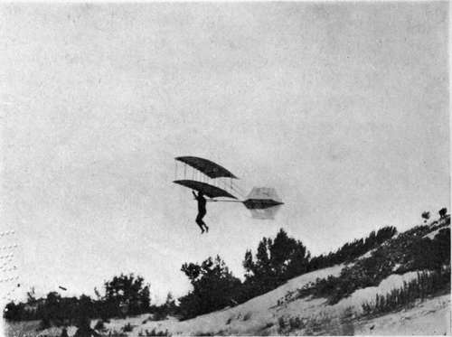
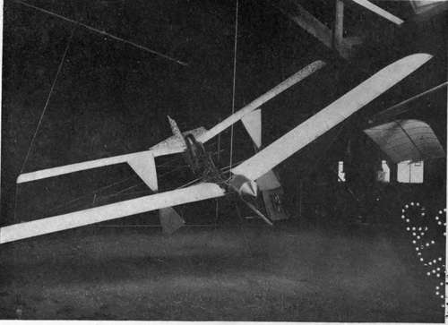

Why Flying Machines Fly. Continued
Description
This section is from the book "The New Art Of Flying", by Waldemar Kaempffert. Also available from Amazon: The New Art of Flying.
Why Flying Machines Fly. Continued
Octave Chanute, a French engineer resident in the United States, continued the work of the ill-fated Lilienthal. Realising the inherent danger of a glider in which the operator must adapt himself to the changing centre of air pressure with lightning-like rapidity, he devised an apparatus in which the centre of air pressure was made to return into coincidence with the centre of gravity, — the second of the two ways of maintaining side-to-side balance. Thus Chanute partly removed the perilous necessity of indulging in aerial gymnastics. In his gliding-machines the tips of the planes, when struck by a gust of wind, would fold slightly backward, thereby curtailing the tendency of the centre of air pressure to shift.
Chanute built six motorless, man-carrying gliders, with three of which several thousand short flights were successfully undertaken. The best results were obtained with an apparatus consisting of two superposed planes, a construction which had been previously adopted by Lilienthal. It remained for the Wright Brothers to provide a more perfect mechanism for controlling the movement of the centre of air pressure.
The principle of sitting or lying still in the aeroplane and, by means of mechanical devices, bringing the centre of air pressure back into alignment with the centre of gravity is now followed by every designer of aeroplanes. The old, dangerous method of shifting weights is quite abandoned. The greatest contribution made by the Wright Brothers to the art of flying was that of providing a trustworthy mechanism for causing the centre of air pressure to return into coincidence with the centre of gravity.
The aeroplane must be balanced not only from side-to-side but fore-and-aft as well. The same necessity exists in the old-fashioned, single-surface kite. To give it the necessary fore-and-aft stability, we used to adorn it with a long tail of knotted strips of rags. If the tail was not heavy or long enough, the kite dived erratically and sometimes met its destruction by colliding with a tree. To insure longitudinal stability, many aeroplane flying-machines are similarly provided with a tail, which consists generally of one or more horizontal plane surfaces. Some aeroplanes, however, are tailless, among them the earlier Wright machines. Usually, they are less stable than the tailed variety.
In order to relieve the aviator of the necessity of more or less incessantly manipulating levers, which control centres of air pressure, many inventors have tried to provide aeroplanes with devices which will perform that task automatically. Some of them are ingenious; but most of them are impracticable because they are too heavy, too complicated, or not responsive enough.
In order to fly, an aeroplane, like a kite or a soaring bird, is made to rise preferably in the very teeth of the wind. What is more, it must be in motion before it can fly. How this preliminary motion was to be obtained long baffled the flying-machine inventor. Eagles, vultures, and other soaring birds launch themselves either by leaping from the limb of a tree or the edge of a cliff, or by running along the ground with wings outspread, until they have acquired sufficient speed. To illustrate the difficulty that even practised soaring birds find in rising from the ground, the late Prof. Samuel P. Langley used to quote the following graphic description of the commencement of an eagle's flight (the writer, one of the founder members of the old aeronautical society of Great Britain, was in Egypt, and the " sandy soil" was that of the banks of the Nile):
" An approach to within 80 yards arouses the king of birds from his apathy. He partly opens his enormous wings, but stirs not yet from his station. On gaining a few feet more he begins to walk away with half-expanded, but motionless, wings. Now for the chance. Fire! A charge of No. 3 from eleven bore rattles audibly but ineffectively upon his densely feathered body; his walk increases to a run, he gathers speed with his slowly waving wings, and eventually leaves the ground. Rising at a gradual inclination, he mounts aloft and sails majestically away to his place of refuge in the Libyan range, distant at least five miles from where he rose. Some fragments of feathers denote the spot where the shot has struck him. The marks of his claws were traceable in the sandy soil, as, at first with firm and decided digs, he forced his way; but as he lightened his body and increased his speed with the aid of his wings, the imprints of his talons gradually merged into long scratches. The measured distance from the point where these vanished to the place where he had stood proved that with all the stimulus that the shot must have given to his exertions he had been compelled to run full 20 yards before he could raise himself from the earth".
We have not all had a chance of seeing this striking illustration of the necessity of getting up speed before soaring, but many of us have disturbed wild ducks on the water and noticed them run along it, flapping their wings for some distance to get velocity before they could fly, and the necessity of initial velocity is at least as great with an artificial flying-machine as it is with a bird. From this, we can readily understand why a vulture can be confined in a small cage, which is entirely open at the top.
To get up preliminary speed many methods have been adopted. Langley tried every conceivable way of starting his small model, and at last hit on the idea of launching it from ways, somewhat as a ship is launched into the water. The model rested on a car which fell down at the extremity of its motion and thus released the model for its free flight. On May 6, 1896, he saw his creation really fly like a living thing, the first time in history that a motor-driven aeroplane ever flew.
The Wright Brothers used to obtain their preliminary speed by having their machine carried down the side of a sandhill, partly supported by a head-wind. Their first perfected motor-driven, man-carrying biplane was started on an inclined track. Most aviators of the present time, however, mount their aeroplanes on pneumatic-tired wheels, and like the eagle, in the foregoing quotation, run along the ground for a short distance. Aeroplanes have also been dropped into the air from balloons.
Fig. 3. Langley's steam-driven model, the first motor flying-machine that ever flew.
Photograph by Smithsonian Institution.
Just as a soaring bird uses his legs in leaping into the air or running on the ground to start his flight and also in alighting, so many aeroplanes alight with the wheels that serve them during the brief moments of launching. Sometimes, however, special alighting devices are provided, a conspicuous example of which is to be found in the skids or runners of the Wright machine.
The problem of steering an aeroplane, when it is launched, is solved, as it must be, by two sets of rudders. A steamboat is a vehicle that travels in two dimensions only; hence, it requires only a single, vertical rudder, which serves to guide it from side to side. An aeroplane moves not only from side to side, but up and down as well. Hence, it is equipped with a vertical rudder similar to that of a steamboat's, and also with a horizontal rudder, which serves to alter its course up or down, and which is becoming more widely known as an elevator. Fore-and-aft stability is attained in tailless machines entirely by manipulation of this elevator. Even in tailed machines its use for that purpose is quite imperative.
Continue to: